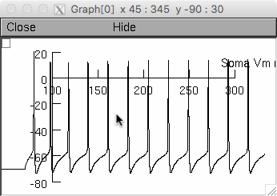
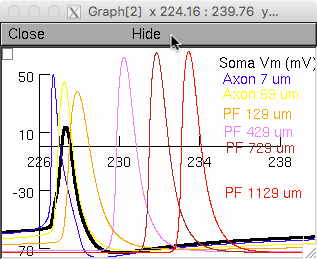
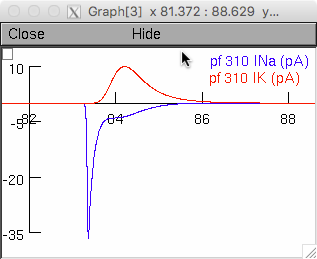
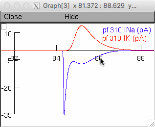

This multicompartment model of the cerebellar granule cell is described in Dover K, Marra C, Solinas S, Popovic M, Subramaniyam S, Zecevic D, D'Angelo E, Goldfarb M (2016) FHF-independent conduction of action potentials along the leak-resistant cerebellar granule cell axon. Nat Commun 7:12895 and is a substantial revision of the prior model by Diwakar et al., Journal of Neurophysiology Published 1 February 2009 Vol. 101 no. 2, 519-532 DOI: 10.1152/jn.90382.2008 Link to prior model: (http://modeldb.yale.edu/116835). The principal revisions are based upon genetic, biochemical, and axon optical imaging and include: (1) very low leak conductance on the distal axon and parallel fibers, and (2) differential tuning of the voltage gated sodium conductance to reflect FHF modulation of gNav in the hillock and axon initial segment, but not along the distal axon or parallel fibers. When downloaded and opened, the model is preset to simulate a 9 pA somatic current injection following a 60 msec delay, which is necessarily incorporated to allow the state distribution in the embedded Nav Markov model in each cellular compartment. Paralleling the data in Figure 5 of Dover et al, the top window corresponds to somatic voltage as in Fig. 5b,  the middle tier windows correspond to traces showing the first and the ninth induced spike conducting along the axon and parallel fiber as in Fig 5d,  and the bottom window shows sodium and potassium currents in a parallel fiber compartment during an action potential, as in the left panel of Fig 5e.  In the Genetic Setup Panel, clicking the button "GrC with FHF in All Compartments" changes the model parameters by adding FHF modulation of gNav to all axon and parallel fiber compartments and by adjusting gNav and gKv to give a near-identical conducting spike waveform. By now re-running the simulation, the parallel fiber spike-associated currents now correspond to the right panel of Fig 5e  and show the consequently greater temporal overlap between INa and IK. Usage instructions: Auto-launch from ModelDB or download and extract the archive, then under: ---- MSWIN run mknrndll, cd to the archive and make the nrnmech.dll. Then double click on the mosinit.hoc file. ---- MAC OS X Drag and drop the GrC folder onto the mknrndll icon. Drag and drop the mosinit.hoc file onto the nrngui icon. ---- Linux/Unix Change directory to the GrC folder. run nrnivmodl. Then type in terminal command line: nrngui mosinit.hoc ---- Running the simulation will generate the simulations and plots shown in Fig. 5 of the paper. The simulation starts automatically. Questions on how to use this model should be directed to: smgsolinas at gmail.com or goldfarb at genectr.hunter.cuny.edu